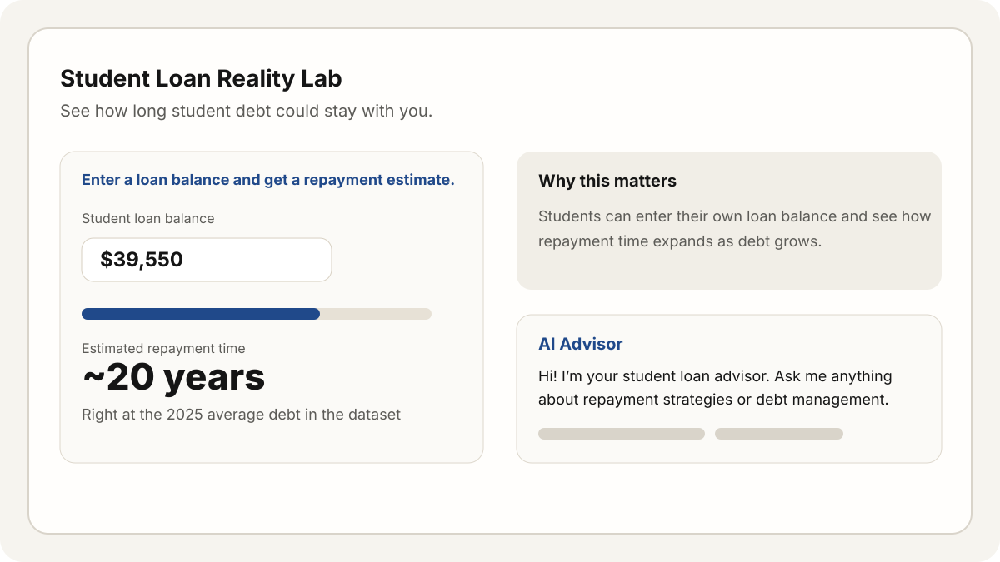

Step 1
See the problem areas
Start with the projects below to understand the real student pain points I’m solving.
Go to projectsAI Product Engineer · Student Career Tools
Building practical AI products for student career readiness.
I build practical AI products for real student problems: unclear resumes, confusing job postings, and weak cover letter writing. The focus is clarity, function, and outcomes.
Designed for students first, but structured so recruiters can scan the work in minutes.
Selected Work
Start Here
Designed so students and recruiters can understand the work quickly.
Step 1
Start with the projects below to understand the real student pain points I’m solving.
Go to projectsStep 2
Review the prompts, iterations, and improvements that shape the product behavior.
Go to processStep 3
Open the project page for screenshots, example outputs, and product reflections.
Open projects pageProof
Filter by task area to narrow the view.
Showing all 3 projects.
Students often undersell what they have done. This tool scores resume strength, flags weak bullets, and rewrites them with clearer action, evidence, and impact.
View project detailsJob postings are often written for experienced applicants. This tool translates requirements into plain language, highlights what proof matters, and gives students a realistic preparation plan.
View project detailsStudents struggle to make cover letters feel specific and believable. This tool rewrites weak drafts using job context, resume evidence, and clearer revision guidance.
View project detailsOther Support
An interactive student debt estimator that makes repayment timelines easier to understand.
This project helps students understand how long debt can stay with them by turning student loan data into a simple interactive estimator with a clearer, more focused experience.

AI Workflow
Each product starts with role-based prompts for a specific student task.
I test output quality across majors, skill levels, and job types.
Try a mini simulation of how each tool transforms student input into clearer, easier-to-understand guidance.
Pick a tool, paste sample input, then run the demo to see a student-friendly explanation, rewrite, and next step.
Ready for input.
About
I want to become an AI Product Engineer who builds practical tools that solve real user problems. My work stays consistent: students + job market + AI tools.
Live
This portfolio is structured for real use: clear role, real problems, explained AI workflow, and functional project pages. Ready for GitHub Pages, Netlify, or Vercel.